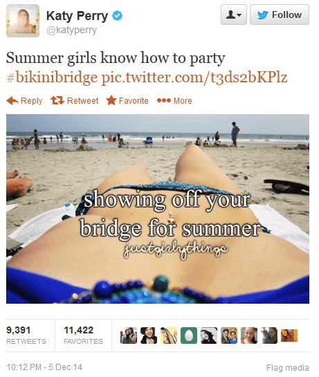

Athlone is a young man whose background gives him unique insight on sociological and cultural changes that are happening today.


There has been a lot of feminist outrage online recently with regard to topics relating to body image. The thigh gap trend was one such topic. Its emphasis on the female maintenance of a gap between the thighs quickly prompted outrage from women who claimed that such a trend would encourage eating disorders and undermine young women’s self-esteem.
The thigh gap trend itself may have been a product of “thinspiration”, an online movement led by a host of tumblr blogs that grew to promote images of thin women and “inspire” females to get closer to a trim ideal. This trend too attracted plenty of female rage with predictable critiques: it would allegedly encourage eating disorders and undermine young women’s self-esteem.
A new trend promoting the “bikini bridge” promises to follow closely in the footsteps of these predecessors. The “bikini bridge” trend focuses on “the graceful space created by a woman’s hip bones suspending bikini bottoms from their abdomens”, and promotes it with a host of images designed to inspire young women to obtain this physical ideal.
This new contender, however, is unique. Unlike its predecessors, it was not created or promoted by young women and has no basis in reality. The bikini bridge is, in fact, an elaborate prank designed by the creative male denizens of 4Chan:
4Chan’s operation (which involved a number of fake social media accounts, photoshopped tweets, and a host of other clever ruses) was a rousing success. The DailyMail fell for it along with a host of other prominent internet personalities and websites. So effective was the hoax that mainsteam media outlets from the Huffington Post to Today.com were forced to address the topic. The entirety of the internet was trolled, and successfully so.

4Chan’s efforts have done more than generate a few hearty laughs across the internet. Rather, they’ve exposed and discredited an increasingly pervasive culture of outrage. What is that culture? It is one where an increasingly large portion of the populace becomes intellectually invested and tied to the idea of their being the victims of persistent oppression, so much so that they see oppression in places where its existence is, at best, tenuous and, at worst, downright improbable.
Such individuals are remarkably easy to troll and by doing so, 4Chan has essentially undermined their credibility. After all, of what value are the complaints of these people if their outrage can be so simply and methodically coaxed with photoshop and fake social media? Of what value can the complaints of people who appear so easily offended actually hold?
The culture of outrage has, essentially, become a joke. It has become so predictable and incredible as to be easily co-opted for the amusement of those it claims to be against (4Chan and feminism have a long, antagonistic history) .
The feminist ideologues who drive this culture need to be careful of this development lest they cease to be taken seriously by a broader society whose acquiescence is needed in order to accomplish their political aims. Their privilege is already becoming obvious to many and receiving increasing scrutiny given their insistence of adopting the mantle of the oppressed victim. If these trends continue, expect the word “feminism” to become a dirty one sooner rather than later.
Read Next: How Superbowl Marketing Discredited Feminism
{kind=link}
{kind=link}
{kind=link}
{kind=link}
{kind=link}
{kind=link}